▶ Vídeo de revisão
Para a prova do 3º tri (19/11): a revisão cobra o Sistema Digestório (onde há digestão química, pH, enzimas, substratos e produtos), o coração e a circulação, a curva de saturação da hemoglobina e o néfron. Por isso o Digestório voltou para esta página.
Extra: o quadro sobre excretas nitrogenados em outros animais, no Cap. 10, não caiu na prova do 2º tri; fica aqui para consulta.
Cap. 1 Sistema Digestório — Visão Geral e Trato Superior
• Digestão mecânica — fragmentação física (mastigação, peristaltismo)
• Digestão química — quebra de moléculas por enzimas e sucos digestivos
Digestão Simples
- Digestão e absorção no mesmo compartimento
- Ex: protozoários, esponjas, planárias
Digestão Complexa (humanos)
- Sistema com órgãos especializados
- Digestão e absorção em locais distintos
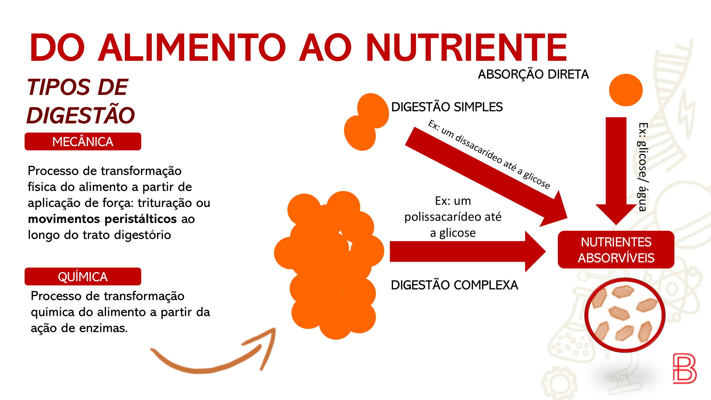
Trato Gastrointestinal — em ordem
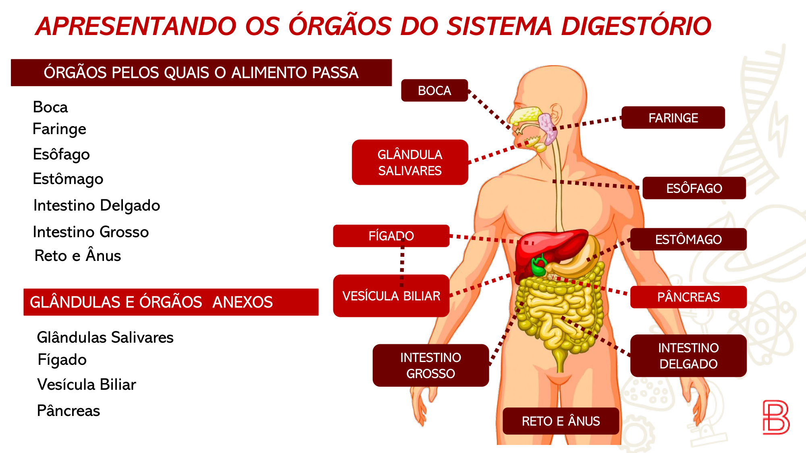
Órgãos Anexos (auxiliam sem fazer parte do trato)
- Glândulas salivares — produzem saliva com ptialina (amilase salivar)
- Fígado — produz bile (emulsificante de gordura)
- Vesícula biliar — armazena e concentra a bile
- Pâncreas — produz suco pancreático (enzimas + bicarbonato)
pH: ~7,0 (neutro)
Ptialina (Amilase Salivar)
- Produzida pelas glândulas salivares
- Substrato: amido (polissacarídeo)
- Produto: maltose (dissacarídeo) — NÃO absorvível
- Ação interrompida no estômago (pH ácido desnatura a ptialina)
- Proteínas e gorduras não são digeridas na boca
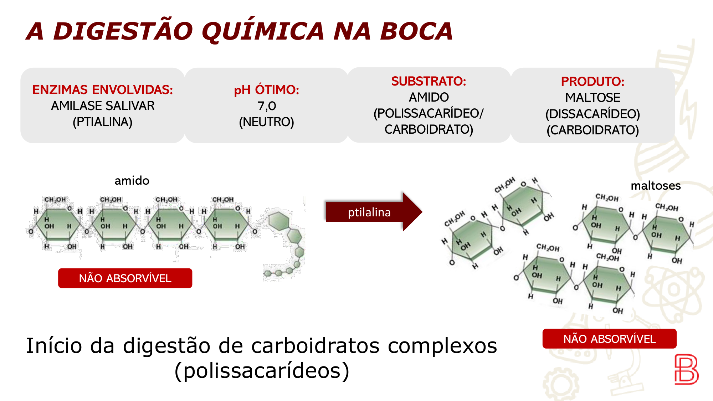
Faringe
- Cruzamento das vias aérea e digestiva
- Reflexo de deglutição: epiglote fecha a traqueia para o alimento ir ao esôfago
- Não realiza digestão química
Esôfago
- Tubo muscular que conecta faringe ao estômago
- Peristaltismo = ondas de contração do músculo liso que empurram o bolo alimentar
- Não realiza digestão química nem absorção
O alimento misturado ao suco gástrico vira quimo — pH ~2 (muito ácido).
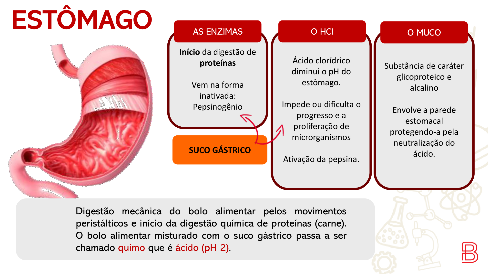
Componentes do Suco Gástrico
- HCl (ácido clorídrico) — acidifica para pH~2, ativa a pepsina, destrói microrganismos
- Pepsinogênio (inativo) → ativado pelo HCl → Pepsina (ativa)
- Muco — protege a parede gástrica do ataque do HCl e da pepsina
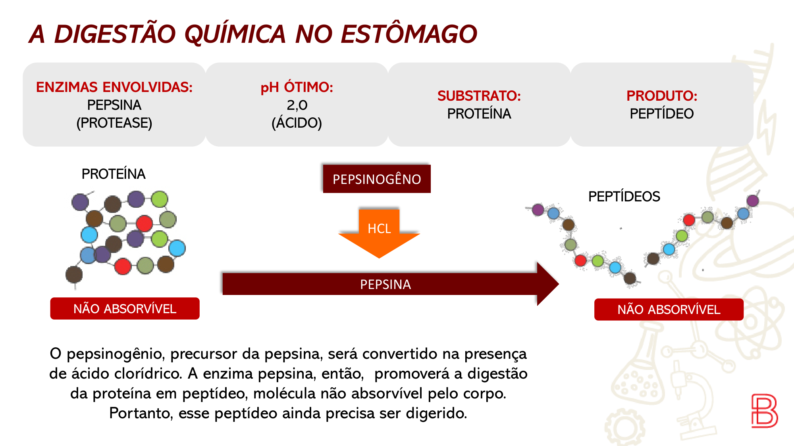
Cap. 2 Intestino Delgado — Duodeno, Jejuno e Íleo
• Bile (do fígado/vesícula biliar via ducto colédoco)
• Suco pancreático (do pâncreas)
• Suco entérico (produzido pelo próprio duodeno)
É aqui que a digestão química atinge capacidade máxima e a maioria das moléculas chega ao estágio absorvível.
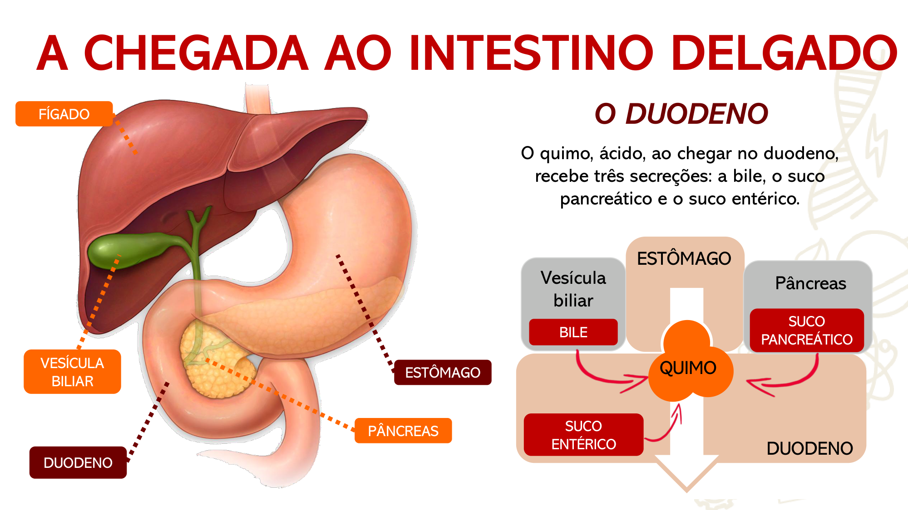
Bile — Emulsificação de Gorduras
- Produzida no fígado, armazenada na vesícula biliar
- Lançada no duodeno pelo ducto colédoco
- Sais biliares emulsificam gorduras: dividem grandes glóbulos em gotículas (maior área para a lipase agir)
- Bile NÃO contém enzimas — é um emulsificante físico, não um catalisador
- Neutraliza o quimo ácido vindo do estômago (ambiente passa para pH ~8)
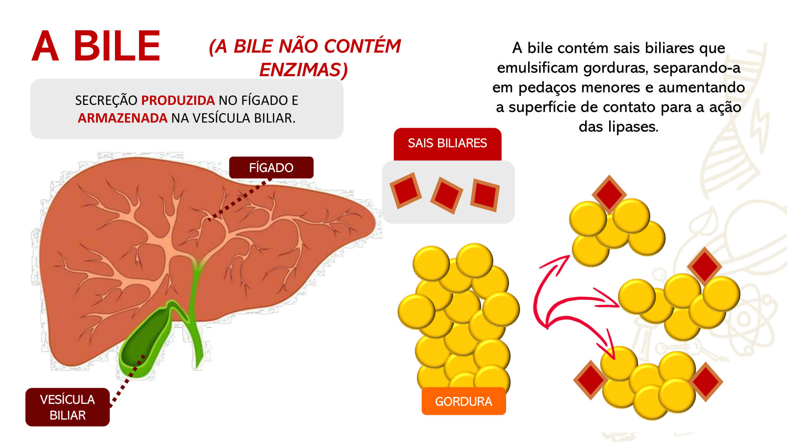
Suco Pancreático
- Bicarbonato — neutraliza o quimo ácido (pH ~8)
- Tripsinogênio (inativo) → ativado pela enteroquinase → Tripsina + Quimiotripsina: proteínas/peptídeos → peptídeos menores
- Amilase pancreática — amido → maltose
- Lipase pancreática — lipídeos (emulsificados pela bile) → ácidos graxos + glicerol (ABSORVÍVEIS)
- RNAse / DNAse — ácidos nucleicos → nucleotídeos (não absorvíveis ainda)
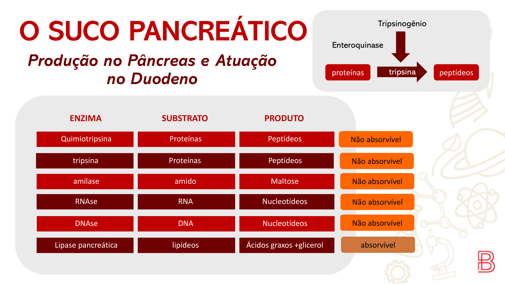
Suco Entérico (produzido pelo duodeno)
- Enteroquinase — ativa o tripsinogênio → tripsina
- Peptidases — peptídeos → aminoácidos (ABSORVÍVEIS)
- Maltase — maltose → glicose + glicose (ABSORVÍVEIS)
- Sacarase — sacarose → glicose + frutose (ABSORVÍVEIS)
- Lactase — lactose → glicose + galactose (ABSORVÍVEIS)
- Deficiência de lactase = intolerância à lactose
- Nucleotidase — nucleotídeos → pentoses + bases nitrogenadas + fosfato (ABSORVÍVEIS)
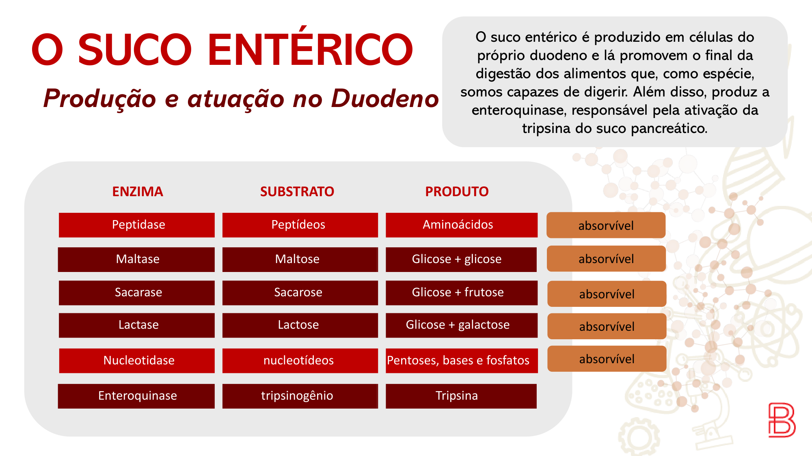
| Local | Enzima / Suco | Substrato | Produto | Absorvível? |
|---|---|---|---|---|
| Boca | Ptialina (amilase salivar) | Amido | Maltose | NÃO |
| Estômago | Pepsina (ativada por HCl) | Proteínas | Peptídeos | NÃO |
| Duodeno | Bile (emulsificante) | Gordura | Gotículas (emulsão) | NÃO (físico) |
| Duodeno | Lipase pancreática | Lipídeos | Ác. graxos + Glicerol | SIM |
| Duodeno | Amilase pancreática | Amido | Maltose | NÃO |
| Duodeno | Tripsina / Quimiotripsina | Proteínas / Peptídeos | Peptídeos menores | NÃO |
| Duodeno | Peptidases (suco entérico) | Peptídeos | Aminoácidos | SIM |
| Duodeno | Maltase | Maltose | Glicose + Glicose | SIM |
| Duodeno | Sacarase | Sacarose | Glicose + Frutose | SIM |
| Duodeno | Lactase | Lactose | Glicose + Galactose | SIM |
| Duodeno | RNAse / DNAse | Ácidos nucleicos | Nucleotídeos | NÃO |
| Duodeno | Nucleotidase | Nucleotídeos | Pentoses + bases + fosfato | SIM |
Estruturas que Ampliam a Superfície de Absorção
Vilosidades (nível de tecido)
- Dobras da mucosa intestinal
- Visíveis a olho nu
- Contêm capilares sanguíneos (aminoácidos, glicose) e vasos quilíferos (ác. graxos)
Microvilosidades (nível celular)
- Projeções da membrana de cada enterócito
- Sustentadas por microfilamentos de actina
- Formam a "borda em escova"
Juntas, ampliam a superfície em até 600× o comprimento tubular do intestino.
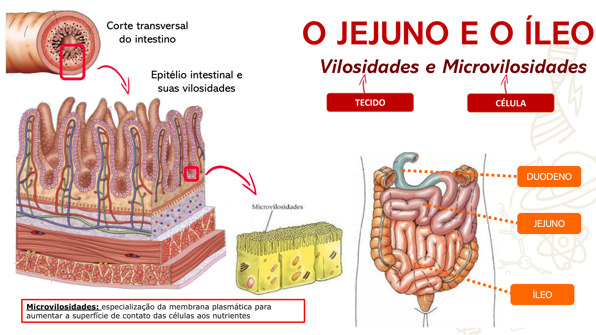
Cap. 3 Intestino Grosso — Microbiota, Água e Fezes
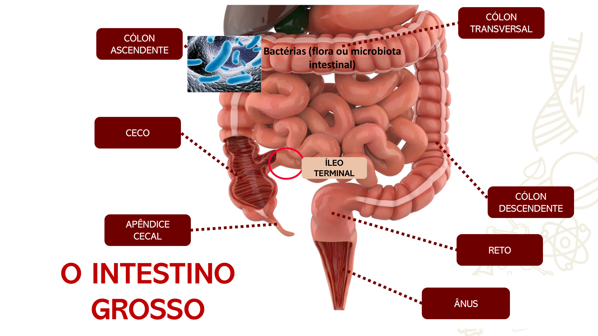
Partes do Intestino Grosso
- Ceco — bolsão inicial onde o íleo desemboca; apêndice vermiforme está aqui
- Cólon ascendente → Cólon transverso → Cólon descendente
- Reto — armazena as fezes temporariamente
- Ânus — eliminação (esfíncter externo voluntário)
Absorção de Água e Sais
- Absorção de água e sais minerais por osmose
- O quilo vai sendo concentrado até formar fezes sólidas
- Composição das fezes: 3/4 água · 1/4 sólido (células mortas, bactérias, fibras indigeríveis)
Constipação = fezes ressecadas (passagem lenta → absorção excessiva de água).
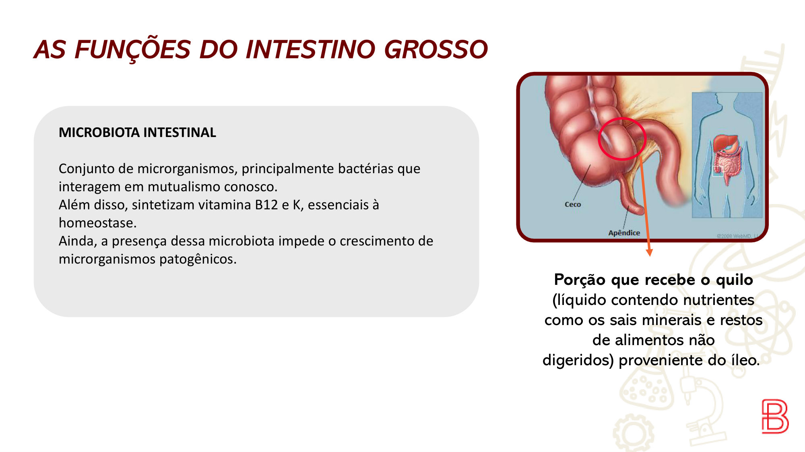
O que a Microbiota Faz por Nós
- Produz vitamina B12 e vitamina K (essenciais ao metabolismo humano)
- Exclusão competitiva — ocupa nichos impedindo colonização por patógenos
- Auxiliam na fermentação de fibras solúveis
- Modulam o sistema imunológico intestinal
Fibra Insolúvel — Celulose
- Não se dissolve em água
- Indigerível (sem celulase humana)
- Aumenta o bolo fecal
- Acelera trânsito intestinal
- Ex: farelo de trigo, folhas
Fibra Solúvel — Pectina
- Dissolve-se formando gel
- Fermentada pela microbiota
- Retarda absorção de glicose e colesterol
- Alimenta a microbiota (prebiótico)
- Ex: maçã, aveia, feijão
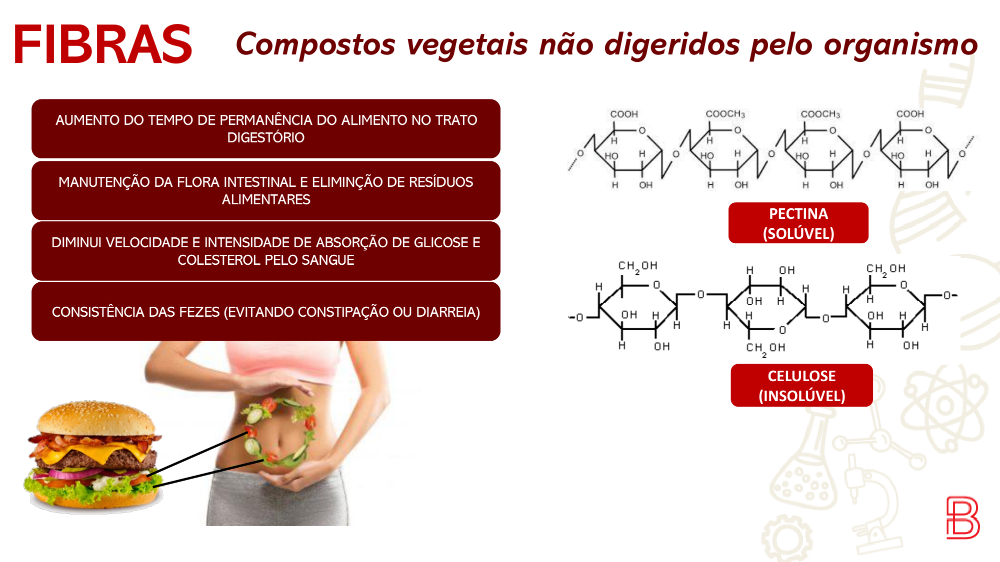
Cap. 4 Transportes de Membrana
Transporte Ativo — contra o gradiente de concentração, com gasto de ATP
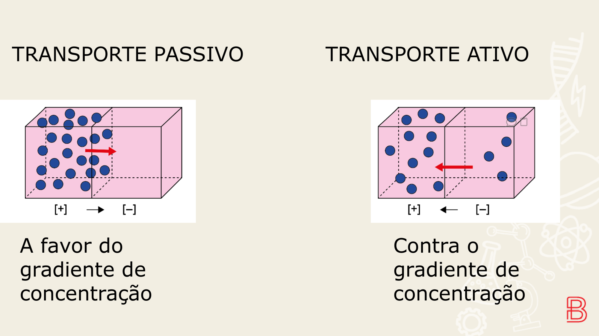
ATIVO → Bomba Na⁺/K⁺ Endocitose Exocitose
Difusão Simples
- Diretamente pelos fosfolipídios
- Moléculas apolares e/ou pequenas
- Sem proteínas transportadoras
- Ex: O₂, CO₂, N₂ (gases), ácidos graxos, vitaminas A, D, E, K
Difusão Facilitada
- Via proteínas transportadoras
- Moléculas polares e/ou grandes
- Canal (poro) — íons (ex: Ca²⁺, K⁺)
- Carreadora — muda conformação (ex: glicose via GLUT, aminoácidos)
- Ainda passivo — sem ATP
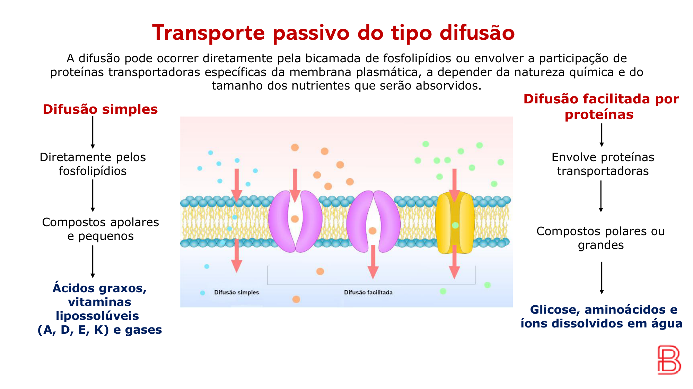
Água é polar, passa lentamente pela bicamada. Em grandes volumes, usa aquaporinas (proteínas canal de água — ainda passivo).
Tipos de Solução
- Isotônica — mesma concentração do interior → sem troca líquida
- Hipotônica — menos solutos que o interior → célula ganha água
- Hipertônica — mais solutos que o interior → célula perde água
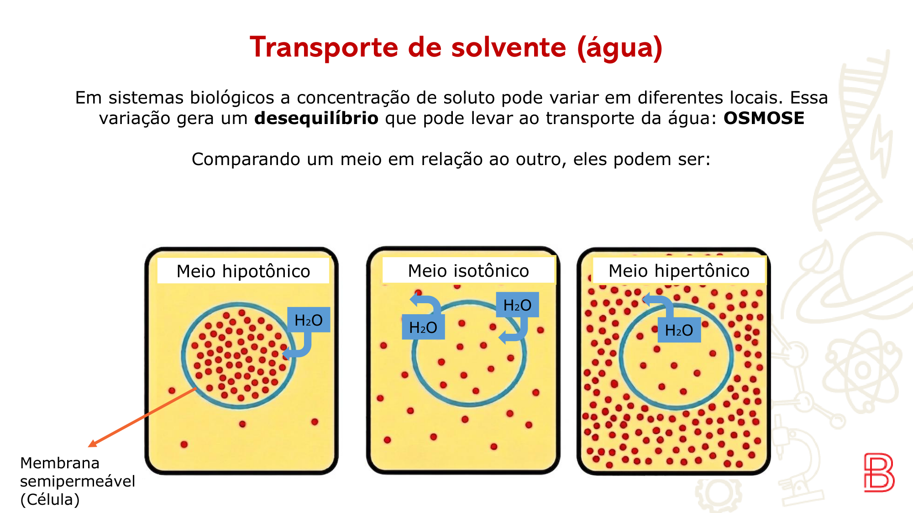
Consequências em Célula Animal vs Vegetal
Célula Animal (sem parede celular)
- Hipertônica → perde água → crenação (enrugada)
- Isotônica → normal
- Hipotônica → ganha água → lise (estoura)
Célula Vegetal (com parede de celulose)
- Hipertônica → perde água → plasmólise (membrana descola da parede)
- Isotônica → flácida
- Hipotônica → ganha água → turgescente (parede impede a lise)
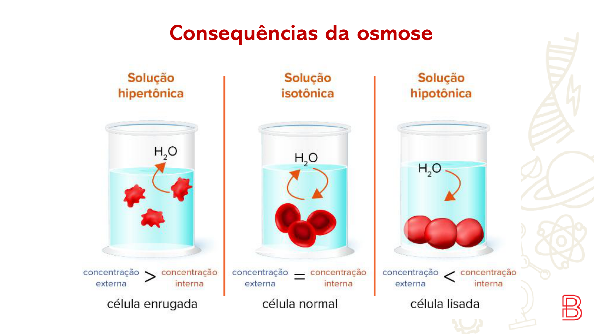
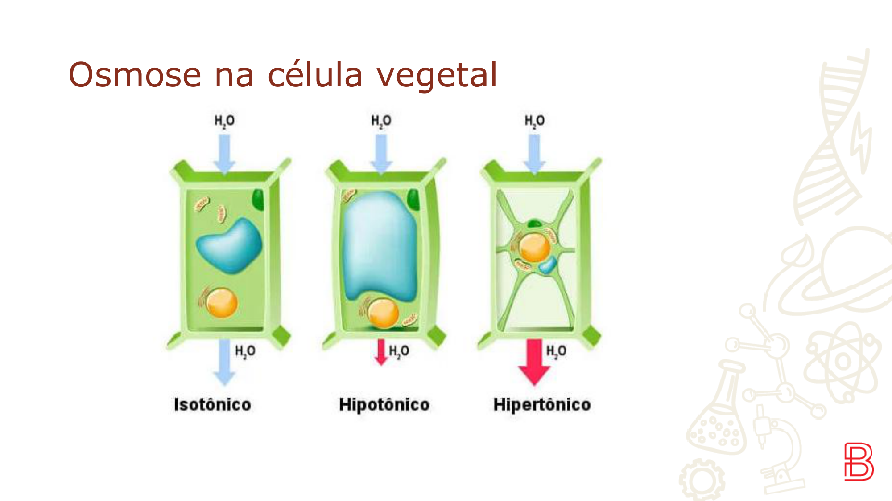
Bomba Na⁺/K⁺-ATPase
- Usa ATP para bombear 3 Na⁺ para FORA e 2 K⁺ para DENTRO
- Ambos contra seus gradientes (ativo)
- Mantém potencial de membrana (interior mais negativo)
- Fundamental para neurônios e músculo cardíaco
Transporte por Vesículas (também ativo)
- Endocitose — internalização:
- Fagocitose — sólidos grandes, com pseudópodes (macrófagos, neutrófilos)
- Pinocitose — líquidos, por invaginação
- Exocitose — liberação:
- Secreção — substâncias úteis (hormônios, enzimas, anticorpos)
- Clasmocitose — resíduos indigeríveis
Lúmen → enterócito → capilar sanguíneo
• Ácidos graxos e vitaminas lipossolúveis → difusão simples (apolares)
• Glicose, aminoácidos, íons → difusão facilitada (proteínas transportadoras)
| Tipo | Mecanismo | ATP? | Direção | Exemplos |
|---|---|---|---|---|
| Difusão Simples | Pelos fosfolipídios | NÃO | Favor do gradiente | O₂, CO₂, ác. graxos, vit. A, D, E, K |
| Difusão Facilitada | Proteína canal ou carreadora | NÃO | Favor do gradiente | Glicose (GLUT), aminoácidos, Ca²⁺, K⁺ |
| Osmose | Fosfolipídios / aquaporinas | NÃO | Hipotônico → Hipertônico | H₂O |
| Bomba Na⁺/K⁺ | Proteína ATPase | SIM | Contra o gradiente | Na⁺ (saída) / K⁺ (entrada) |
| Fagocitose | Pseudópodes + vesícula | SIM | Entrada (sólidos) | Bactérias, restos celulares |
| Pinocitose | Invaginação + vesícula | SIM | Entrada (líquidos) | Fluido extracelular |
| Exocitose (secreção) | Fusão de vesícula com membrana | SIM | Saída | Insulina, enzimas, anticorpos |
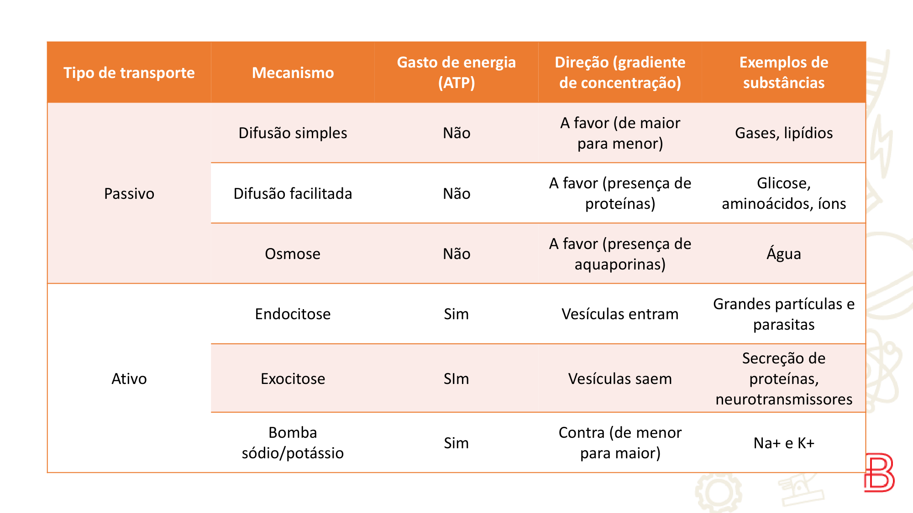
Cap. 5 Sistema Circulatório — Organização e Anatomia
Componentes principais
- Coração — bomba que impulsiona o sangue
- Artérias — conduzem sangue DO coração para os tecidos
- Veias — conduzem sangue DOS tecidos para o coração
- Capilares — vasos microscópicos onde ocorrem as trocas entre sangue e tecidos
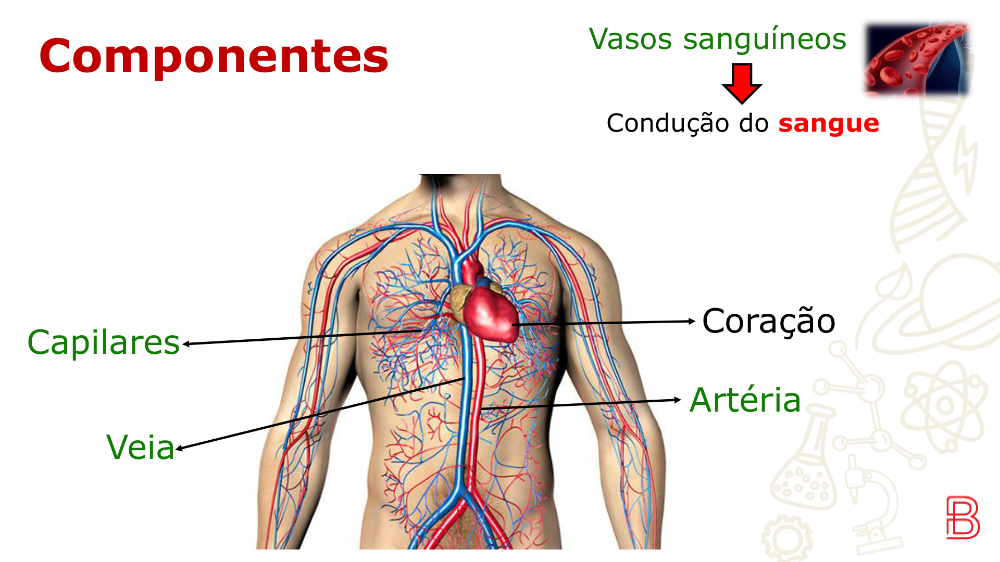
Átrio Direito
- Recebe sangue venoso (O₂ baixo) das veias cavas superior e inferior
- Envia para o ventrículo direito pela válvula tricúspide
Átrio Esquerdo
- Recebe sangue arterial (O₂ alto) das veias pulmonares
- Envia para o ventrículo esquerdo pela válvula mitral/bicúspide
Ventrículo Direito
- Bombeia sangue para os pulmões pela artéria pulmonar
- Parede mais fina (pressão menor — pequena circulação)
Ventrículo Esquerdo
- Bombeia sangue para todo o corpo pela aorta
- Parede mais espessa (pressão maior — grande circulação)
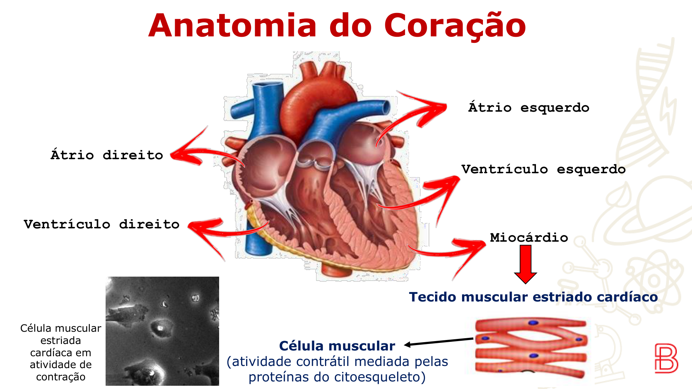
Válvulas Atrioventriculares (AV)
- Tricúspide — entre átrio direito e ventrículo direito (3 cúspides)
- Mitral (bicúspide) — entre átrio esquerdo e ventrículo esquerdo (2 cúspides)
- Abrem durante a diástole ventricular (enchimento); fecham durante a sístole (evitam refluxo para os átrios)
Válvulas Semilunares
- Pulmonar — entre ventrículo direito e artéria pulmonar
- Aórtica — entre ventrículo esquerdo e aorta
- Abrem durante a sístole ventricular; fecham durante a diástole (impedem refluxo das artérias)
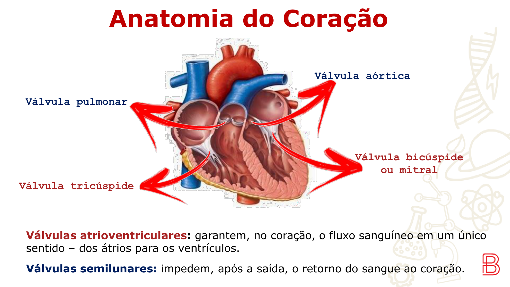
Artérias
- Conduzem sangue do coração para os tecidos
- Paredes espessas e elásticas — suportam alta pressão
- Camada muscular lisa desenvolvida (se contraem para regular fluxo)
- Regra geral: conduzem sangue oxigenado (exceto artéria pulmonar)
Veias
- Conduzem sangue para o coração a partir dos tecidos
- Paredes mais finas, menor pressão
- Possuem válvulas venosas que impedem o refluxo do sangue
- Regra geral: conduzem sangue desoxigenado (exceto veias pulmonares)
Capilares
- Vasos microscópicos — parede com apenas 1 camada de células (endotélio)
- Local de troca de substâncias entre sangue e tecidos (O₂, CO₂, nutrientes, resíduos)
- Maior área total de secção transversal → menor velocidade do sangue → mais tempo para trocas
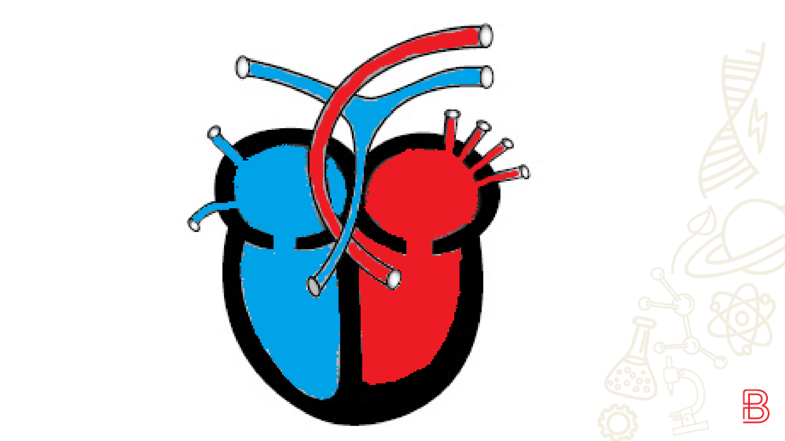
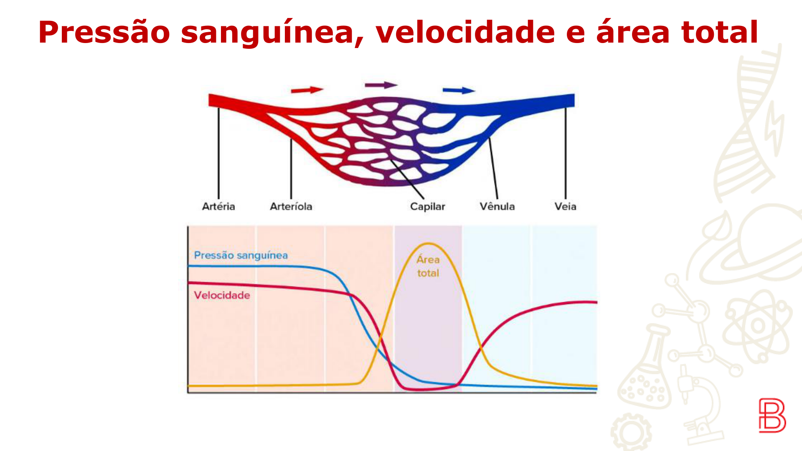
Cap. 6 Sistema Circulatório — Fisiologia
- Fechada — o sangue circula sempre dentro de vasos (nunca banha diretamente os tecidos, ao contrário da circulação aberta de insetos)
- Dupla — existem dois circuitos: pequena circulação (pulmonar) e grande circulação (sistêmica)
- Completa — sangue oxigenado e desoxigenado não se misturam no coração (septos cardíacos completos); diferente de anfíbios e répteis (incompleta)
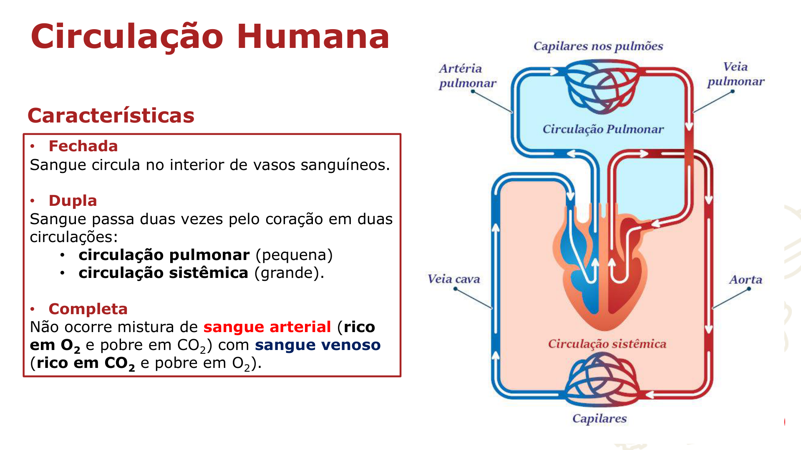
Pequena Circulação (Pulmonar)
- Ventrículo direito → Artéria pulmonar → Pulmões → Veias pulmonares → Átrio esquerdo
- Objetivo: hematose (troca de CO₂ por O₂ nos pulmões)
- Sangue venoso (azul) → Sangue arterial (vermelho)
Grande Circulação (Sistêmica)
- Ventrículo esquerdo → Aorta → Tecidos → Veias cavas → Átrio direito
- Objetivo: distribuir O₂ e nutrientes para todos os tecidos e recolher CO₂ e resíduos
- Sangue arterial (vermelho) → Sangue venoso (azul)
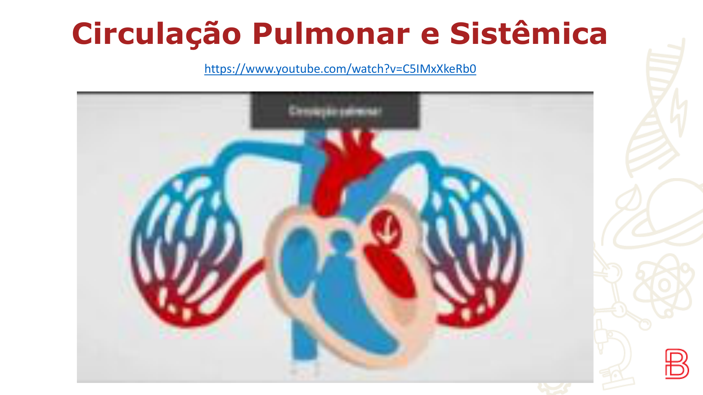
Diástole = relaxamento do músculo cardíaco → câmara se enche de sangue
Fases do Ciclo Cardíaco
- Diástole atrial — átrios relaxam e se enchem de sangue vindo das veias
- Sístole atrial — átrios contraem e empurram sangue para os ventrículos (válvulas AV abertas)
- Diástole ventricular — ventrículos relaxam e se enchem
- Sístole ventricular — ventrículos contraem com força, fechando válvulas AV e abrindo semilunares → sangue sai para artérias
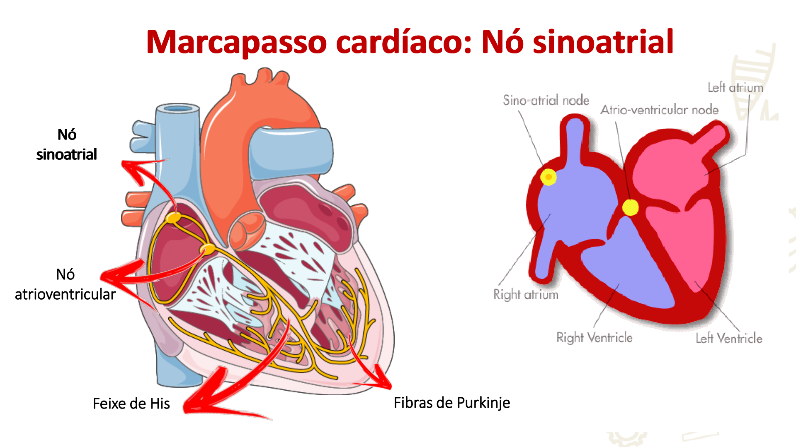
Caminho do Impulso Elétrico
- Nó sinoatrial (NSA) — localizado no átrio direito; gera ~60–100 impulsos/min (FC normal); ativa os átrios
- Nó atrioventricular (NAV) — entre átrios e ventrículos; retarda levemente o impulso para os átrios contraírem antes dos ventrículos
- Feixe de His — conduz o impulso pelo septo interventricular
- Fibras de Purkinje — distribuem o impulso pelas paredes ventriculares, coordenando a contração de baixo para cima
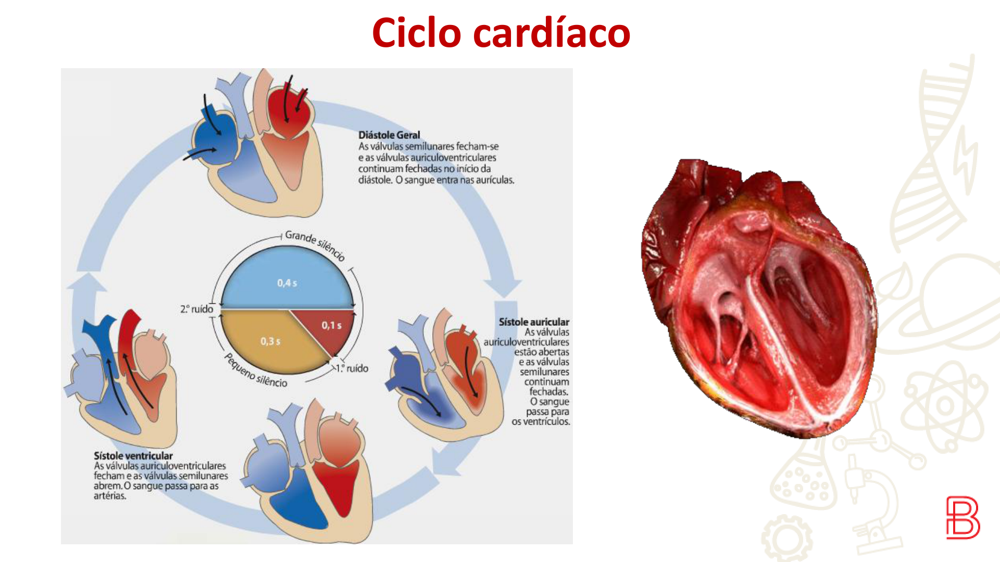
Expressa em mmHg no formato sistólica/diastólica.
PA normal: 12 × 8 (120/80 mmHg)
Hipertensão (Pressão Alta)
- PA ≥ 14 × 9 (140/90 mmHg)
- Silenciosa — frequentemente sem sintomas
- Riscos: AVC, infarto, insuficiência renal
Hipotensão (Pressão Baixa)
- PA < 9 × 6 (90/60 mmHg)
- Sintomas: tontura, desmaio, fraqueza
- Pode indicar desidratação ou problemas cardíacos
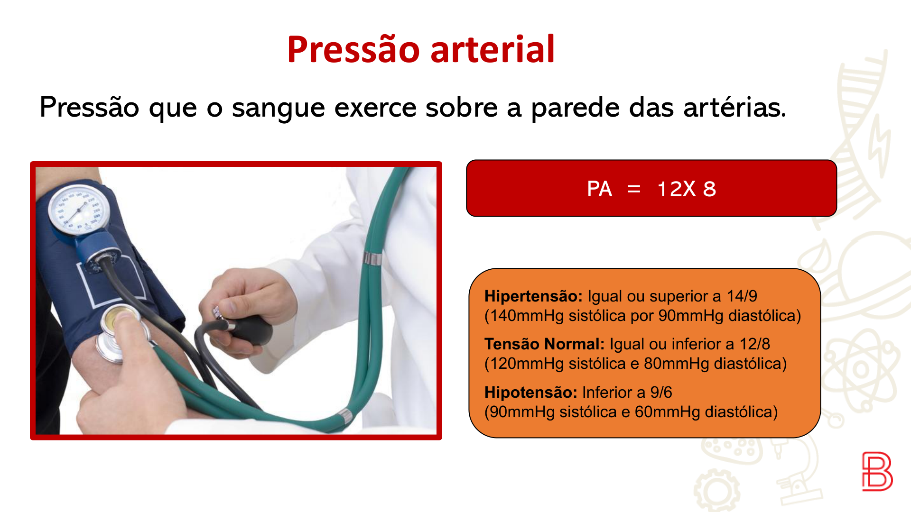
Frequência Cardíaca (FC)
- Número de batimentos cardíacos por minuto (bpm)
- Normal em repouso: 60–100 bpm (adultos)
- Bradicardia — FC < 60 bpm (atletas frequentemente têm FC baixa — coração mais eficiente)
- Taquicardia — FC > 100 bpm (esforço, estresse, patologias)
- Regulada pelo sistema nervoso autônomo (simpático ↑ FC; parassimpático ↓ FC) e hormônios (adrenalina ↑ FC)
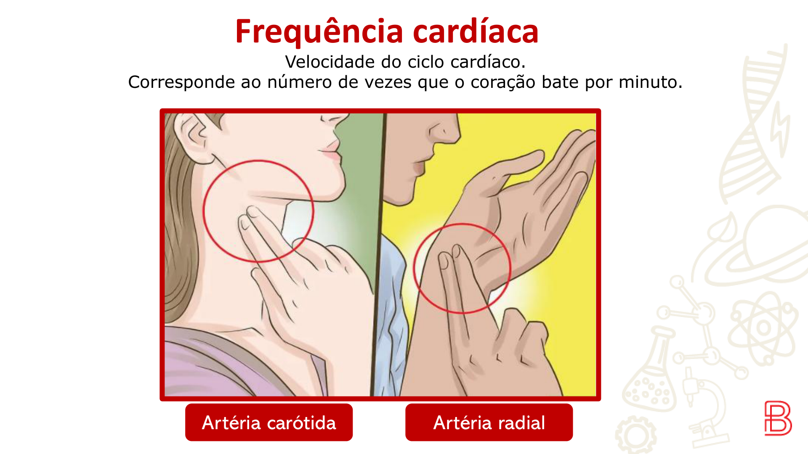
Cap. 7 Sangue e Linfa
Plasma (~55% do volume)
- ~90% água + proteínas plasmáticas (albumina, globulinas, fibrinogênio)
- Sais e íons (Na⁺, K⁺, Cl⁻, HCO₃⁻, Ca²⁺), nutrientes, hormônios, gases dissolvidos e excretas
Elementos figurados (~45% — o hematócrito)
- Hemácias (eritrócitos) — transporte de gases
- Leucócitos — defesa
- Plaquetas (trombócitos) — fragmentos de megacariócitos, não são células inteiras — coagulação
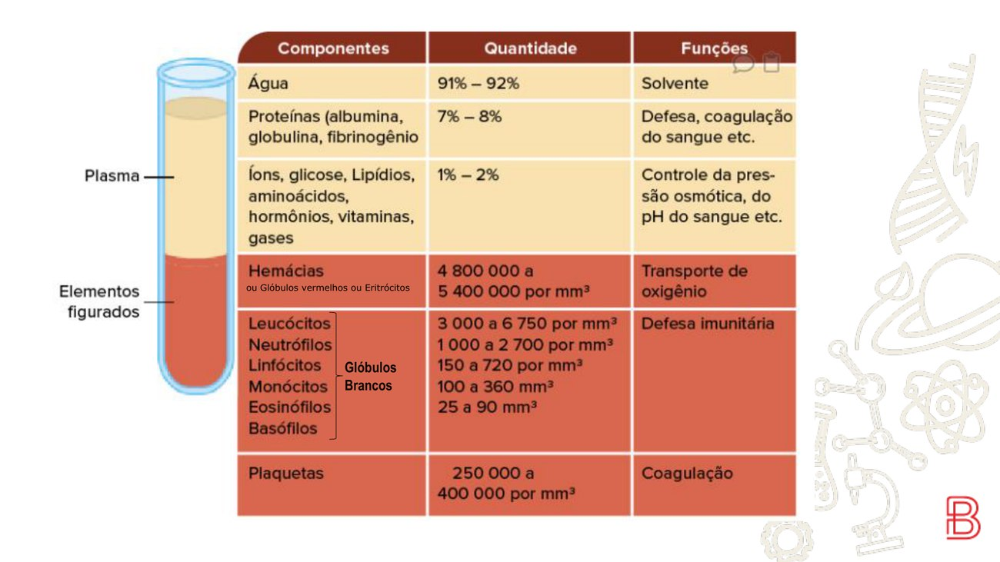
Albumina (~60% — produzida no fígado)
- Mantém a pressão oncótica, "segurando" água dentro dos vasos por osmose
- Transporta hormônios, ácidos graxos, bilirrubina, cálcio e medicamentos
- Sua falta causa edema (a água escapa dos capilares)
Globulinas
- Alfa/beta — transportam lipídios, vitaminas, hormônios e íons metálicos
- Gamaglobulinas = anticorpos (imunoglobulinas), produzidos pelos plasmócitos
Hemácias (eritrócitos)
- Componente principal: hemoglobina (4 cadeias, cada uma com um grupo heme + Fe²⁺)
- São anucleadas nos mamíferos — perdem núcleo, mitocôndrias e ribossomos na medula, abrindo espaço para mais hemoglobina
- Anemia = redução de hemácias/hemoglobina. Causas: ferro, B12/ácido fólico, hemorragias, hemólise, doenças genéticas (falciforme, talassemia), verminose, insuficiência renal (menos eritropoietina)
Leucócitos (glóbulos brancos)
- Função: defesa. Chegam ao local da infecção por diapedese (atravessam o capilar) guiados por quimiotaxia (sinais químicos)
- Neutrófilos (50-70%, mais numerosos) — 1ºs a chegar, fagocitam bactérias, morrem no processo (formam o pus)
- Linfócitos B — produzem anticorpos; Linfócitos T — coordenam (auxiliares) ou destroem células infectadas (citotóxicos)
- Monócitos — maiores leucócitos, viram macrófagos nos tecidos
- Eosinófilos (alergias/parasitoses) e basófilos (histamina/heparina)
- Leucocitose (aumento): infecções, inflamação, estresse, ou de forma grave — leucemia. Leucopenia (queda): infecções virais, quimioterapia, doenças autoimunes → imunodepressão
Plaquetas
- Função: hemostasia — formam o tampão plaquetário e liberam tromboplastina
- Trombocitopenia (queda): petéquias, hematomas, sangramentos (dengue grave)
- Trombocitose (aumento): risco de trombos → AVC, embolia, infarto
Onde são produzidos
Todos derivam de uma célula-tronco na medula óssea vermelha (hematopoiese). Os linfócitos T saem imaturos e amadurecem no timo; os linfócitos B amadurecem na própria medula.
As plaquetas e o tecido lesionado liberam tromboplastina, que — com íons Ca²⁺ — converte a protrombina (proteína inativa, produzida no fígado com ajuda da vitamina K) em trombina. A trombina age sobre o fibrinogênio, transformando-o em fibrina, que forma a rede do coágulo.
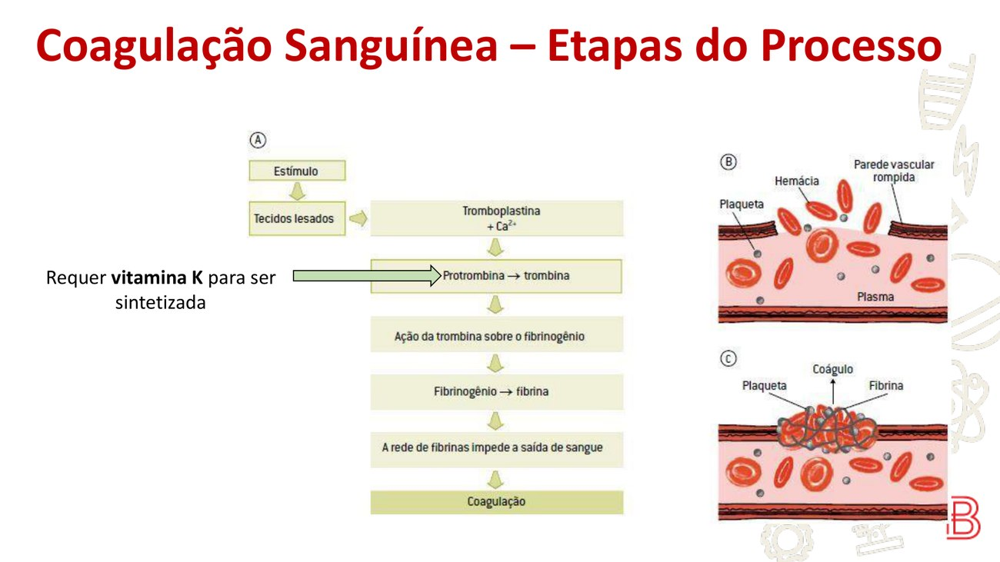
Vitamina K
- Cofator para o fígado sintetizar protrombina e outros fatores
- Fontes: folhas verde-escuras, fígado, ovos — e parte é produzida pela microbiota intestinal
Cálcio (fator IV)
- Cofator em várias etapas, inclusive protrombina→trombina
- Tubos de coleta com EDTA/citrato impedem a coagulação sequestrando o cálcio
Composição parecida com o plasma, mas com menos proteínas, sem hemácias nem plaquetas — rica em linfócitos. No intestino, os vasos quilíferos absorvem gorduras e a linfa fica leitosa (quilo).
Relação com o sangue
- Origem: vem do plasma que extravasou dos capilares
- Destino: retorna ao sangue pelo ducto torácico e ducto linfático direito, que desembocam nas veias subclávias
- Diferenças: circulação de mão única (nunca ao contrário), sem bomba própria (depende dos músculos esqueléticos e de válvulas) e não transporta hemácias
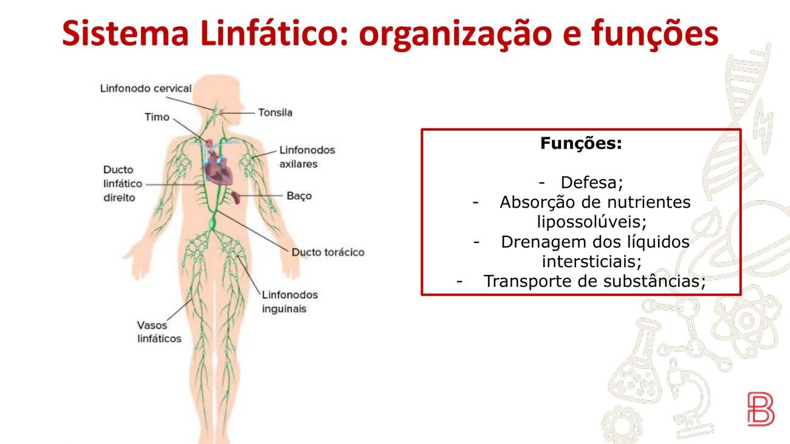
Órgãos linfoides
- Vasos linfáticos — devolvem o líquido ao sangue; nos vasos quilíferos, absorvem lipídios e vitaminas A/D/E/K
- Linfonodos — filtram a linfa, concentram linfócitos/macrófagos; incham na "íngua" (linfadenopatia)
- Baço — polpa branca (filtra o sangue, monta resposta imune) e polpa vermelha (destrói hemácias velhas, ~120 dias, recicla o ferro)
- Timo — maturação e seleção dos linfócitos T; ativo na infância, involui na puberdade
Cap. 8 Sistema Imunológico
Funções essenciais
- Distinguir o próprio (self) do estranho (não self)
- Combater agentes infecciosos (bactérias, vírus, fungos, protozoários, vermes)
- Vigilância imunológica — destruir células tumorais
- Limpeza e reparo — remover células mortas/restos celulares
- Memória imunológica — respostas mais rápidas em novos contatos (base das vacinas)
Quando falha por falta
- Imunodeficiências (AIDS) — infecções oportunistas se tornam letais
Quando falha por excesso
- Alergias (resposta a pólen/ácaros) e doenças autoimunes (lúpus, diabetes tipo 1, artrite reumatoide)
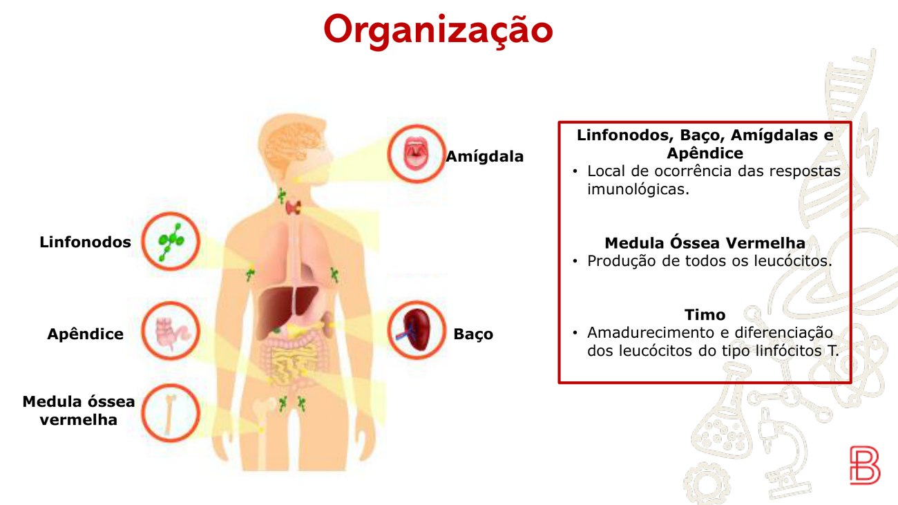
Órgãos e antígenos
- Linfonodos, baço, amígdalas e apêndice — local das respostas imunológicas
- Medula óssea vermelha — produção de todos os leucócitos
- Timo — amadurecimento dos linfócitos T
- Antígenos — componentes moleculares (em geral proteínas/polissacarídeos) de corpos estranhos, que deflagram a produção de anticorpos
| Imunidade INATA | Imunidade ADAPTATIVA | |
|---|---|---|
| Também chamada | natural, inespecífica | adquirida, específica |
| Quando surge | já nascemos com ela | desenvolve-se após contato com o antígeno |
| Especificidade | age igual contra qualquer invasor | sob medida para cada antígeno |
| Velocidade | imediata (minutos a horas) | lenta no 1º contato (dias) |
| Memória | NÃO gera | GERA memória |
Componentes da Inata
- Barreiras físicas/químicas (pele, muco, cílios, lisozima, suco gástrico, microbiota)
- Fagócitos (neutrófilos, macrófagos, dendríticas)
- Células NK (matam infectadas/tumorais)
- Inflamação, febre, sistema complemento
Componentes da Adaptativa
- Linfócitos B → plasmócitos → anticorpos (imunidade humoral)
- Linfócitos T: citotóxicos (CD8, destroem infectadas) e auxiliares (CD4, coordenam)
- Ambos deixam células de memória
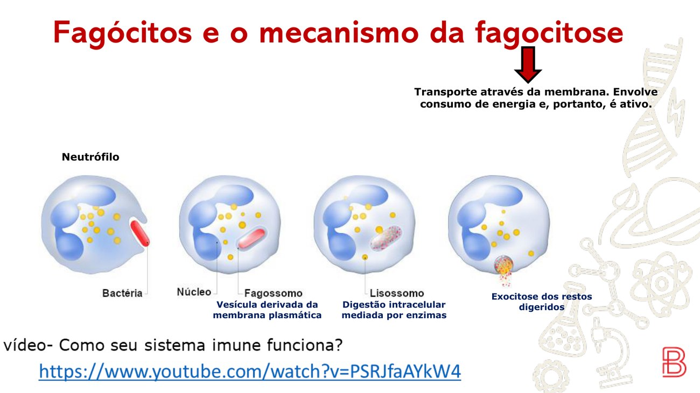
Fagocitose
- Neutrófilo engloba o micro-organismo em um fagossomo, que se funde a lisossomos (fagolisossomo) — resposta rápida, morre no processo, forma o pus
- Macrófago (do monócito) fagocita mais e vive mais, e ainda atua como célula apresentadora de antígeno — a ponte entre a imunidade inata e a adaptativa
| Tipo | Definição | Exemplo |
|---|---|---|
| Ativa Natural | O organismo contrai a doença e produz seus próprios anticorpos e memória. Lenta, duradoura. | Ter tido catapora |
| Ativa Artificial | Produz os próprios anticorpos, mas o antígeno foi introduzido artificialmente. Lenta, duradoura, com memória. | VACINAS |
| Passiva Natural | Recebe anticorpos prontos por via natural. Sem memória, curta duração. | Placenta (IgG), leite/colostro (IgA) |
| Passiva Artificial | Recebe anticorpos prontos inoculados artificialmente. Imediata, sem memória. | SOROS |
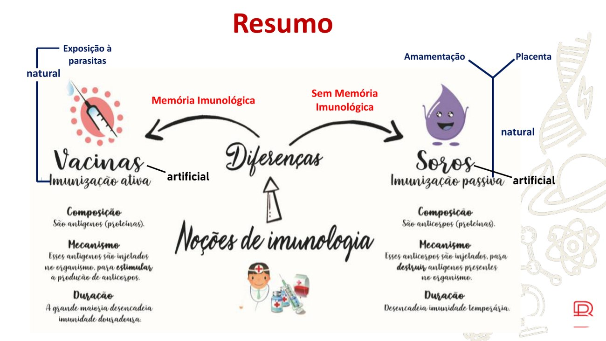
VACINA (ativa artificial)
- Antígeno morto/atenuado/mRNA estimula a produção dos próprios anticorpos
- Ação lenta (dias/semanas) — por isso é preventiva
- Duração longa, gera memória — daí as doses de reforço
SORO (passiva artificial)
- Anticorpos prontos (produzidos em animal, ex. cavalo) transferidos ao paciente
- Ação imediata — por isso é curativo/tratamento
- Duração curta, sem memória — precisa de novo soro se picado de novo
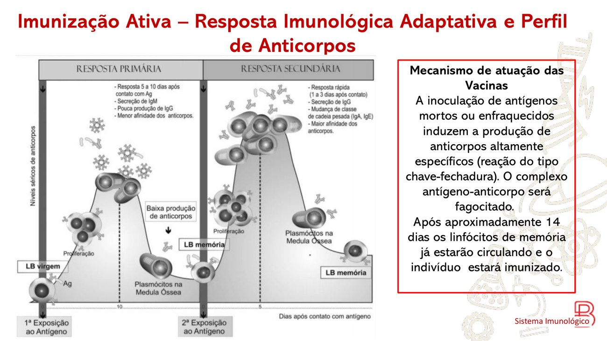
1º contato (resposta primária)
- Poucos linfócitos reconhecem aquele antígeno — precisam se multiplicar (expansão clonal)
- Latência de vários dias, produção baixa, predomínio de IgM
- Ao final, ficam as células de memória
2º contato (resposta secundária)
- Células de memória já existem em grande número
- Resposta rápida (horas a poucos dias), muito mais intensa, predomínio de IgG
- Patógeno costuma ser eliminado antes de causar sintomas
Cap. 9 Sistema Respiratório
Respiração Sistêmica
- Processo mecânico/físico: entrada e saída de ar, hematose, transporte pelo sangue
- Não produz energia
Respiração Celular
- Processo bioquímico, ocorre nas mitocôndrias
- Oxida glicose com O₂, libera CO₂, água e ATP
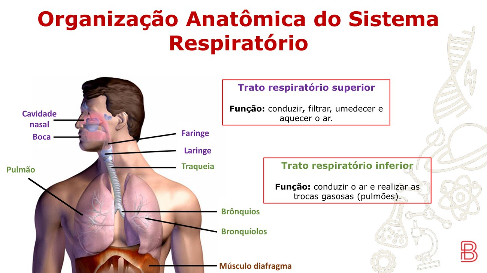
Trato Superior
- Conduz, filtra, umedece e aquece o ar
Trato Inferior
- Conduz o ar e realiza as trocas gasosas (pulmões)
- A faringe é comum ao sistema respiratório e digestório; a epiglote fecha a laringe na deglutição, evitando engasgo
- A traqueia tem anéis cartilaginosos em C e epitélio ciliado com muco — o aparelho mucociliar, destruído pelo cigarro
- Do nariz aos bronquíolos terminais o ar só circula, sem trocar nada: é o espaço morto anatômico. A troca começa nos bronquíolos respiratórios
Músculos e movimentos respiratórios
| Movimento | Volume torácico | Pressão interna | Diafragma |
|---|---|---|---|
| Inspiração | Aumenta | Diminui (menor que a atmosférica → ar entra) | Contraído, se aplana |
| Expiração | Diminui | Aumenta (maior que a atmosférica → ar sai) | Relaxado, volta à cúpula |
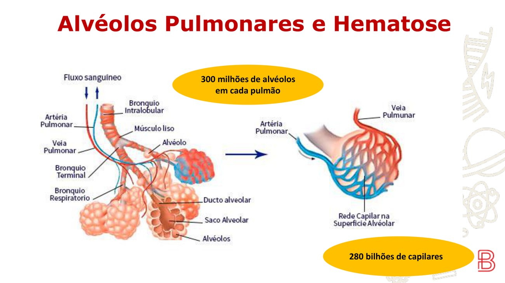
Hemoglobina e o transporte de O₂
- 4 cadeias, cada uma com um grupo heme + Fe²⁺. Liga até 4 O₂, formando oxi-hemoglobina
- ~98,5% do O₂ do sangue viaja ligado a ela (multiplica ~70× a capacidade de transporte do plasma sozinho)
- Ligação cooperativa → curva sigmoide. Liberação nos tecidos é favorecida por baixa pO₂, pH baixo (efeito Bohr), temperatura alta
Transporte de CO₂ (o inverso: hemoglobina é coadjuvante)
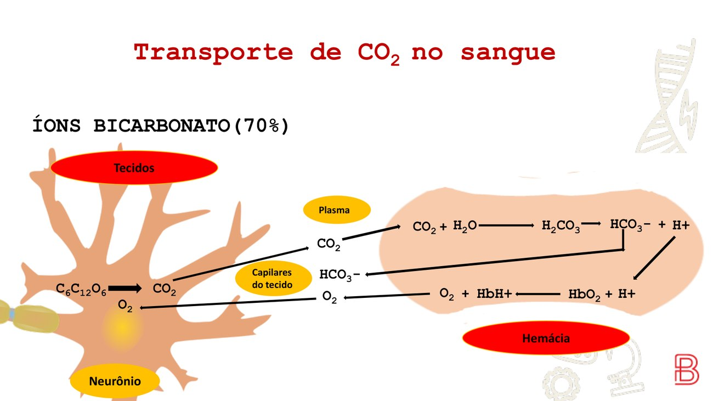
- ~70% como bicarbonato (HCO₃⁻) — CO₂ + H₂O → H₂CO₃ → H⁺ + HCO₃⁻, reação acelerada pela anidrase carbônica dentro da hemácia
- ~23% como carbaminoemoglobina — liga-se à parte proteica (globina), não ao ferro, por isso não compete com o O₂
- ~7% dissolvido no plasma
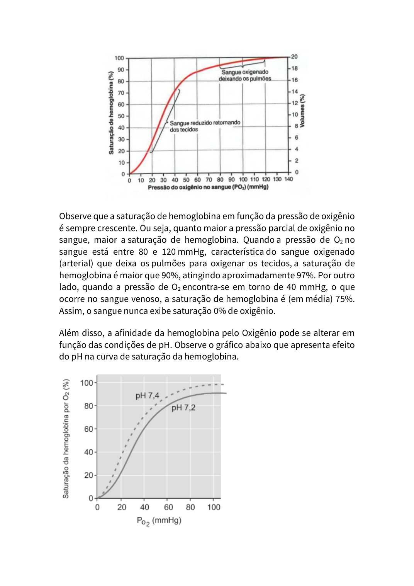
- A saturação de Hb em função da pO₂ é sempre crescente — nunca chega a 0%
- pO₂ entre 80-120 mmHg (sangue arterial, saindo dos pulmões): saturação >90%, ~97%
- pO₂ ~40 mmHg (sangue venoso normal): saturação ~75%
Cap. 10 Sistema Excretor
| Estrutura | O que elimina |
|---|---|
| Rins (Sistema excretor) | Urina — água, sais, ureia, H⁺ |
| Pulmões | Água e CO₂ |
| Glândulas sudoríparas (pele) | Água, sais e ureia (suor) |
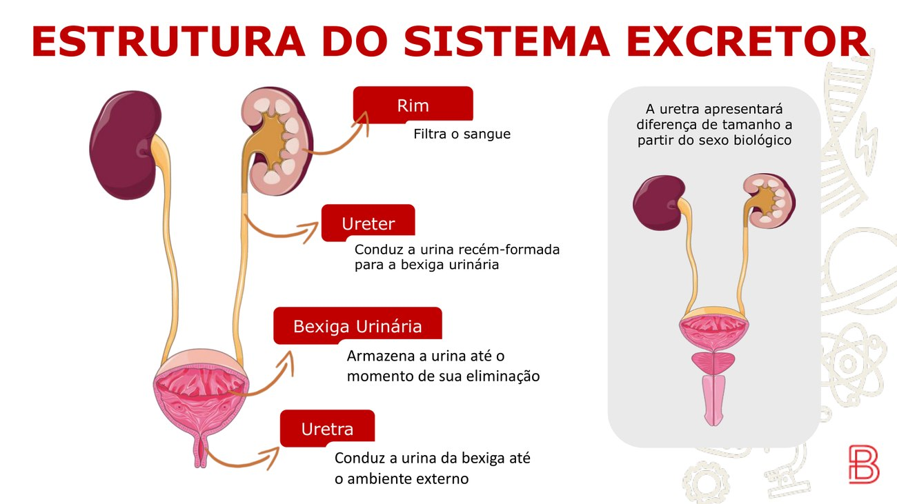
- Rins — filtram o sangue, formam a urina
- Ureteres — conduzem a urina até a bexiga por movimentos peristálticos (não por gravidade)
- Bexiga urinária — armazena a urina (~400-600 mL)
- Uretra — conduz a urina ao exterior, com esfíncter interno (involuntário) e externo (voluntário); no homem também é via reprodutiva
Córtex renal (externo)
- Corpúsculos renais (glomérulo + cápsula de Bowman) e túbulos contorcidos — onde ocorre a filtração
Medula renal (interno)
- Pirâmides renais, alças de Henle e ductos coletores — gradiente que concentra a urina
A pelve renal, em forma de funil, recebe a urina das papilas e a conduz ao ureter.
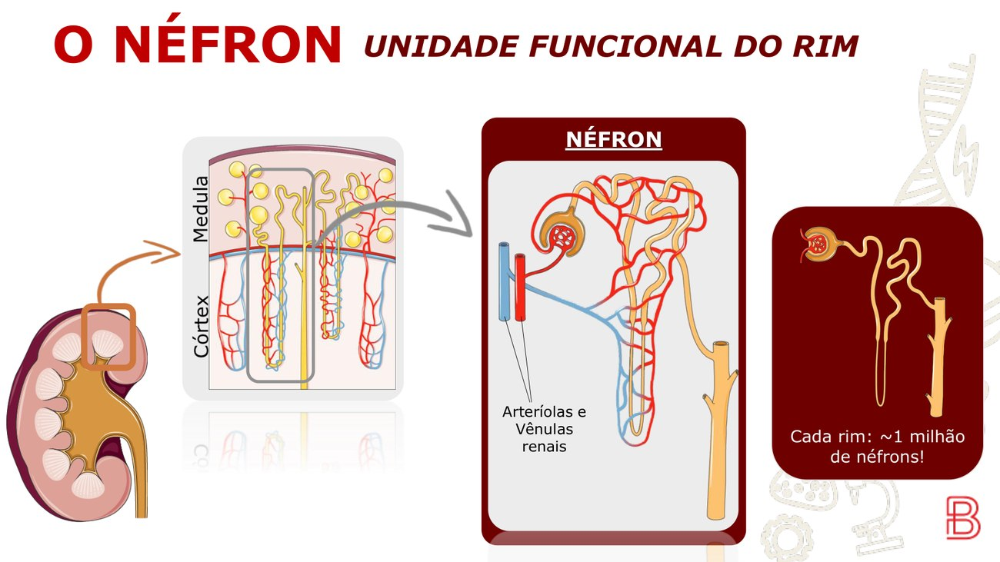
As partes do néfron (~1 milhão por rim)
- Glomérulo — novelo de capilares (arteríola aferente entra, eferente — mais estreita — sai, mantendo alta pressão)
- Cápsula de Bowman — recebe o filtrado; glomérulo + cápsula = corpúsculo renal
- Túbulo contorcido proximal — reabsorção em massa (100% glicose e aminoácidos)
- Alça de Henle — gradiente osmótico da medula (mecanismo de contracorrente)
- Túbulo contorcido distal — ajuste fino, sob ação de aldosterona e ADH
- Ducto coletor — compartilhado por vários néfrons, reabsorção final de água (ADH)
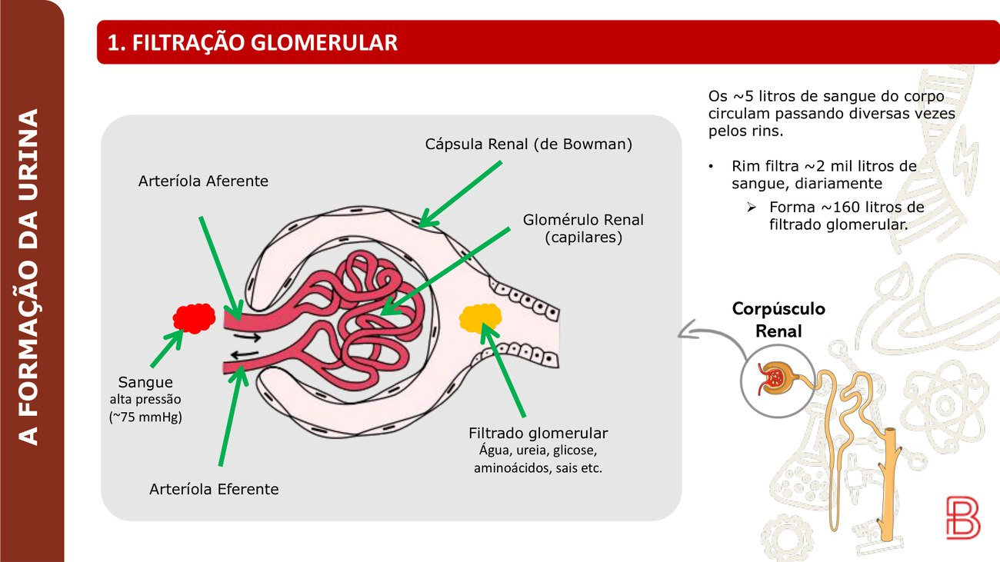
| Local | Processo | Substâncias | Transporte envolvido |
|---|---|---|---|
| Corpúsculo renal (glomérulo + cápsula) | Filtração, sob alta pressão (~75 mmHg) | Água, glicose, aminoácidos, sais, ureia etc. | Pressão hidrostática (não é osmose/difusão/ativo — é filtração, um 4º mecanismo) |
| Túbulo contorcido proximal | Reabsorção em massa (100% glicose/aminoácidos) | Água, glicose, aminoácidos, sais | Transporte ativo (glicose/aminoácidos/Na⁺, contra o gradiente) + osmose (água acompanha os solutos) |
| Alça de Henle | Reabsorção por osmose (gradiente de contracorrente) | Água e sais | Ramo descendente: osmose (água sai). Ramo ascendente: transporte ativo de NaCl (impermeável à água) |
| Túbulo contorcido distal | Secreção ativa de excretas | Ácido úrico, amônia, H⁺ | Transporte ativo (contra o gradiente, gasta ATP) |
| Ducto coletor | Reabsorção final de água (ADH), conduz a urina ao ureter | Água, ureia, sais | Osmose, via aquaporinas — sua permeabilidade é regulada pelo ADH |
Sangue × Filtrado Glomerular × Urina
O corpúsculo renal filtra o plasma quase sem selecionar por tipo de molécula pequena — por isso o filtrado glomerular começa parecido com o plasma (sem células nem proteínas grandes). É só depois, na reabsorção e na secreção ao longo do néfron, que a composição muda bastante até virar urina:
| Substância | Sangue (plasma) | Filtrado glomerular | Urina |
|---|---|---|---|
| Proteínas e células | Presentes (hemácias, leucócitos, proteínas plasmáticas) | Ausentes — grandes demais para passar pelo filtro | Ausentes (se aparecerem, é sinal de lesão renal) |
| Glicose | Presente | Igual ao plasma | Praticamente zero — 100% reabsorvida no túbulo proximal |
| Aminoácidos | Presentes | Iguais ao plasma | Praticamente zero — reabsorvidos no túbulo proximal |
| Ureia | Presente (baixa concentração) | Igual ao plasma | Concentrada — é a principal excreta eliminada |
| Sais (Na⁺, K⁺...) | Concentração regulada | Igual ao plasma | Variável — o que excede a necessidade do corpo é eliminado |
| Água | Volume normal | Grande volume (~180 L/dia) | Volume bem menor (~1,5 L/dia) — a maior parte foi reabsorvida |
O rim é o principal órgão da homeostase:
- Excreção de resíduos nitrogenados (ureia, ácido úrico, creatinina)
- Osmorregulação — volume de água, via ADH (antidiurético)
- Equilíbrio hidroeletrolítico (Na⁺, K⁺, Cl⁻, Ca²⁺...)
- Equilíbrio ácido-base — excreta H⁺, reabsorve bicarbonato
- Regulação da pressão arterial — pela renina (sistema renina-angiotensina-aldosterona)
- Função endócrina — eritropoietina (estimula produção de hemácias) e ativação da vitamina D
Componentes normais da urina
- Água (~95%), ureia, sais/íons, creatinina, ácido úrico, urocromo/urobilina (cor amarela)
O que NÃO deve aparecer
- Glicose (glicosúria) → sinal de diabetes
- Proteínas (proteinúria) → lesão glomerular
- Hemácias (hematúria) → lesão, cálculo ou infecção
• Amoniotélicos (amônia): muito tóxica e solúvel, precisa de muita água para ser eliminada. Peixes ósseos e invertebrados aquáticos.
• Ureotélicos (ureia): menos tóxica, produzida no fígado; gasta menos água. Mamíferos (o ser humano), anfíbios adultos e peixes cartilaginosos.
• Uricotélicos (ácido úrico): quase insolúvel e pouco tóxico, sai com pouquíssima água. Aves, répteis e insetos; ajuda o embrião dentro do ovo.
Quiz — AI Unificada e Prova Trimestral
40 questões · Digestório · Transportes · Circulatório · Sangue e Linfa · Imunológico · Respiratório · Excretor
Folhas de alface temperadas com sal e vinagre murcham poucos minutos depois.
1. O fenômeno ocorre porque
A glicose entra nas células por proteínas da família GLUT, sem gasto de ATP.
2. Esse tipo de transporte é
Uma substância tóxica bloqueia a produção de ATP nas células de um tecido.
3. Entre os processos abaixo, o mais diretamente prejudicado é
No intestino grosso, as células absorvem Na⁺ ativamente do conteúdo intestinal, e a água vai atrás.
4. Esse mecanismo mostra que
Um medicamento é injetado numa veia do braço e precisa chegar aos rins.
5. Até sair do coração rumo aos rins, ele passa, nesta ordem, por
I. A artéria pulmonar transporta sangue pobre em O₂. II. As veias pulmonares chegam ao átrio esquerdo com sangue rico em O₂. III. Artéria é todo vaso que transporta sangue oxigenado. IV. O ventrículo esquerdo tem parede mais espessa porque bombeia sangue para o corpo todo.
6. Estão corretas as afirmações
Ao auscultar o coração, o médico ouve o "lub-dub" de cada batimento.
7. O primeiro som, o "lub", corresponde
Nos capilares, o sangue corre muito mais devagar do que na aorta, embora cada capilar seja muito mais fino.
8. Isso acontece porque
O nó atrioventricular (NAV) atrasa levemente o impulso elétrico que vem do nó sinoatrial.
9. Esse atraso é importante porque
Em repouso, um atleta tem frequência cardíaca de 50 bpm e pressão de 12 × 8. Um adulto sedentário tem 105 bpm e 15 × 10.
10. É correto afirmar que
Num teste de paternidade, o laboratório descarta as hemácias e usa os leucócitos da amostra de sangue.
11. Isso é feito porque as hemácias humanas
Tubos de coleta para hemograma contêm EDTA ou citrato, substâncias que se ligam ao cálcio do sangue.
12. Esses aditivos impedem a coagulação porque
O sangue coletado num tubo sem anticoagulante coagula. Depois de um tempo, sobra um líquido amarelado por cima do coágulo.
13. Esse líquido é
Crianças com desnutrição proteica grave costumam ter inchaço nas pernas e no abdome.
14. Uma explicação fisiológica para esse inchaço é
Hemograma de um paciente: hemácias e leucócitos normais; plaquetas, 40 mil/mm³ (referência: 150 mil a 450 mil/mm³).
15. O resultado é compatível com
Na filariose, vermes obstruem vasos linfáticos, e partes do corpo, como as pernas, incham muito (elefantíase).
16. O inchaço ocorre porque
Uma pessoa picada por jararaca recebe soro antibotrópico no pronto-socorro.
17. Sobre esse tratamento, é correto afirmar que o soro
I. Bebê que recebe anticorpos pelo leite materno II. Criança que teve catapora III. Adulto que tomou vacina contra a gripe IV. Paciente que recebeu soro antitetânico
18. As imunizações I, II, III e IV são, respectivamente,
Num segundo contato com o mesmo antígeno, o nível de anticorpos sobe em poucas horas e fica muito mais alto que no primeiro contato.
19. Essa diferença se explica porque
I. A imunidade inata age igual contra qualquer invasor e não gera memória. II. Pele, muco e suco gástrico são barreiras da imunidade adaptativa. III. Linfócitos B originam plasmócitos, que produzem anticorpos. IV. Macrófagos fagocitam e apresentam antígenos, ligando a resposta inata à adaptativa.
20. Estão corretas as afirmações
O HIV infecta e destrói os linfócitos T auxiliares (CD4).
21. Infecções oportunistas se tornam graves em pessoas com AIDS porque
Num ferimento infectado por bactérias, forma-se pus em poucas horas.
22. A formação do pus se deve principalmente aos
Na inspiração tranquila, o diafragma se contrai e se aplana.
23. Em consequência,
Num banheiro fechado com aquecedor a gás com defeito, uma pessoa sente tontura e pode morrer, mesmo havendo O₂ no ar.
24. Isso acontece porque o monóxido de carbono (CO)
Com pO₂ de 40 mmHg, a hemoglobina fica cerca de 75% saturada em pH 7,4 e cerca de 60% saturada em pH 7,2.
25. Para um músculo em exercício intenso, esses dados indicam que
O CO₂ produzido nas células precisa viajar pelo sangue até os pulmões.
26. A maior parte desse CO₂ é transportada
É impossível alguém se matar apenas prendendo a respiração.
27. A explicação é que
Atletas que passam semanas treinando em cidades de grande altitude, como La Paz (3.600 m), costumam render melhor ao voltar ao nível do mar.
28. Uma adaptação que explica esse ganho é
Exame de urina de um paciente: glicose presente em grande quantidade (glicosúria).
29. A explicação mais provável é que
Concentração (g/100 mL) no plasma, no filtrado glomerular e na urina: X: 0,1 · 0,1 · 0 Y: 0,03 · 0,03 · 2,0 Z: 7,0 · 0 · 0
30. As substâncias X, Y e Z são, respectivamente,
Depois de uma tarde de calor sem beber água, a urina fica escura e sai em pequena quantidade.
31. O principal responsável por esse ajuste é o ADH, que
I. A filtração glomerular ocorre por pressão hidrostática, e não por transporte ativo. II. Na reabsorção, substâncias saem do sangue e são lançadas no filtrado. III. No túbulo proximal, glicose e aminoácidos são reabsorvidos por transporte ativo. IV. A ureia é produzida nos rins, a partir da filtração do sangue.
32. Estão corretas as afirmações
No glomérulo, a arteríola que sai (eferente) é mais estreita que a arteríola que entra (aferente).
33. Essa diferença de calibre
Pacientes com insuficiência renal crônica costumam ter anemia.
34. Uma explicação é que os rins doentes
Num experimento, amido foi misturado com saliva em dois tubos a 37 °C: um em pH 7 e outro em pH 2.
35. O resultado esperado é que o amido seja digerido
As células da parede do estômago liberam pepsinogênio, e não pepsina pronta.
36. A vantagem disso é
Uma pessoa retirou a vesícula biliar e passou a ter desconforto depois de refeições muito gordurosas.
37. Isso se explica porque
O quimo chega ao duodeno muito ácido, vindo do estômago.
38. Se o pâncreas deixasse de liberar bicarbonato,
Na doença celíaca, as vilosidades do intestino delgado ficam achatadas.
39. A consequência mais direta é
Depois de semanas de antibiótico, um paciente apresentou sangramentos por falta de vitamina K.
40. A relação entre os fatos é que o antibiótico